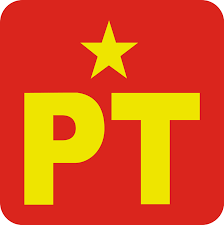
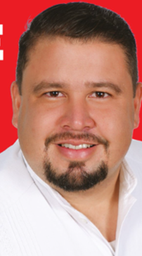
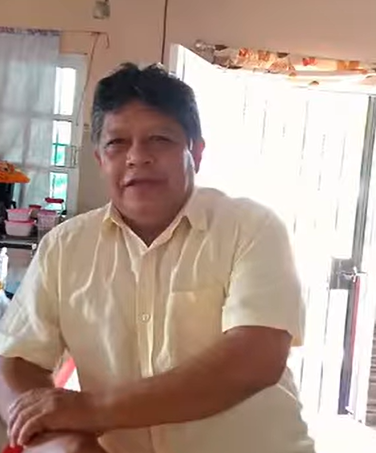

Encuesta de aspirantes a la alcaldía municipal de Tierra Blanca, Veracruz
Selecciona a tu candidato favorito y oprime el botón "Votar".
Reynaldo Aguirre Solís (PAN)
Juan José Ruiz Hernández (MC)
Edwing Eduardo González Fernández (Morena)
Olivia Estela Valera Ortega (PRI)
  Jorge Francisco Sisniega López (PT)
 Arturo Pereda el hijo del Pueblo
Votar
Gracias por votar